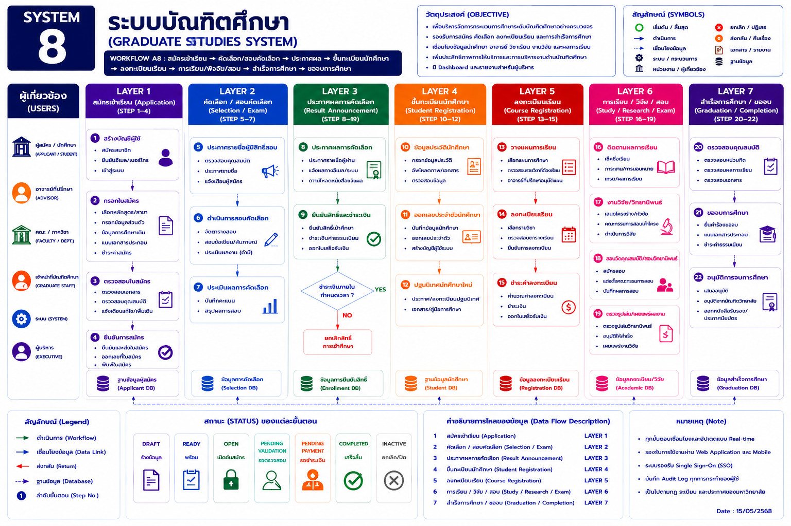

หน้าแรก › บัณฑิตศึกษา › ภาพรวมระบบบัณฑิตศึกษา
ภาพรวมระบบบัณฑิตศึกษา
แสดง Workflow กลางตั้งแต่สมัครเข้าเรียน คัดเลือก ขึ้นทะเบียน ลงทะเบียน เรียน/วิจัย/สอบ จนถึงสำเร็จการศึกษา
SYSTEM 8: ระบบบัณฑิตศึกษา

แสดง Workflow กลางตั้งแต่สมัครเข้าเรียน คัดเลือก ขึ้นทะเบียน ลงทะเบียน เรียน/วิจัย/สอบ จนถึงสำเร็จการศึกษา
